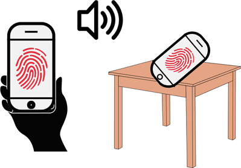

In this site, we will collect raw motion sensor data from your phone. Please follow a series of 5 steps to complete the process.
To help you stay on track, we’ve set up a clock and a movement bar. These are just guides, you may complete the steps in less time.
If you encounter any issues, you can reset the session and start over again.
Before proceeding, please ensure:
Your phone's volume is at maximum.
You have enough space to walk 10 steps in a straight line.
You are in a quiet place.
You are standing and ready for data collection.
When you are ready, double-tap the button below to begin.
Step 1: Start Recording
00:20
Open the Sensor Logger app and start the recording. Please confirm that the study is active.
Step 2: On Hand
00:20
Hold your phone still in your hand for 10 seconds, as if you were reading a text.
Keep your arm relaxed, and avoid any movement.
Step 3: On Table
00:20
Place your phone on a flat surface, such as a table, and leave it untouched for 10 seconds.
Step 4: Repeat
00:30
Repeat Steps 2 and 3. This time, the website will play inaudible audio in the background.
Hold your phone still in your hand for 10 seconds, then place it on a flat surface for another 10 seconds.

Step 5: Walk
00:40
Walk 10 steps in a straight line, change direction, and walk another 10 steps.
Hold your phone in your hand and move your arms naturally.
Pause briefly before changing direction.
Finish Recording
Congratulations! You have successfully completed all steps.
Please return to the Sensor Logger app and tap the 'Stop Recording' button to finish the session.
Remember to send your recordings.
Important Note
Please do not delete your browser cookies for the duration of the study. This is crucial for the experiment to function properly and for us to differentiate your device from others.
Stop Data Recording!
Please stop the data recording in the Sensor Logger app before resetting the session.
This is crucial to prevent data loss.